4 Introduction to Data Science with R
The source R script available here
Contents
- Video1 - Data Analysis Part 1
- Video2 - Data Analysis Part 2
- Video3 - Data Analysis Part 3
- Video4 - Exploratory Modeling (Random Forests)
- Train a Random Forest with the default parameters using pclass & title
- Train a Random Forest using pclass, title, & sibsp
- Train a Random Forest using pclass, title, & parch
- Train a Random Forest using pclass, title, sibsp, parch
- Train a Random Forest using pclass, title, & family.size
- Train a Random Forest using pclass, title, sibsp, & family.size
- Train a Random Forest using pclass, title, parch, & family.size
- Video5 - Cross Validation
- Video6 - Exploratory Modeling 2
- Video7 Submitting, scoring, and some analysis
R codes from the Youtube tutorial from Dave Langer. https://github.com/EasyD/IntroToDataScience
options(show.error.locations = TRUE)
#
# This R source code file corresponds to video 7 of the YouTube series
# "Introduction to Data Science with R" located at the following URL:
# https://youtu.be/fuB7s19g3nQ
#
4.1 Video1 - Data Analysis Part 1
https://www.youtube.com/watch?v=32o0DnuRjfg
# Video1 - Data Analysis Part 1 ----
# Load raw data
train <- read.csv("train.csv", header = TRUE)
test <- read.csv("test.csv", header = TRUE)
print(xtable::xtable(head(train,n=10)), type='html')
survived | pclass | name | sex | age | sibsp | parch | ticket | fare | cabin | embarked | |
|---|---|---|---|---|---|---|---|---|---|---|---|
1 | 0 | 3 | Braund, Mr. Owen Harris | male | 22.00 | 1 | 0 | A/5 21171 | 7.25 | S | |
2 | 1 | 1 | Cumings, Mrs. John Bradley (Florence Briggs Thayer) | female | 38.00 | 1 | 0 | PC 17599 | 71.28 | C85 | C |
3 | 1 | 3 | Heikkinen, Miss. Laina | female | 26.00 | 0 | 0 | STON/O2. 3101282 | 7.92 | S | |
4 | 1 | 1 | Futrelle, Mrs. Jacques Heath (Lily May Peel) | female | 35.00 | 1 | 0 | 113803 | 53.10 | C123 | S |
5 | 0 | 3 | Allen, Mr. William Henry | male | 35.00 | 0 | 0 | 373450 | 8.05 | S | |
6 | 0 | 3 | Moran, Mr. James | male | 0 | 0 | 330877 | 8.46 | Q | ||
7 | 0 | 1 | McCarthy, Mr. Timothy J | male | 54.00 | 0 | 0 | 17463 | 51.86 | E46 | S |
8 | 0 | 3 | Palsson, Master. Gosta Leonard | male | 2.00 | 3 | 1 | 349909 | 21.07 | S | |
9 | 1 | 3 | Johnson, Mrs. Oscar W (Elisabeth Vilhelmina Berg) | female | 27.00 | 0 | 2 | 347742 | 11.13 | S | |
10 | 1 | 2 | Nasser, Mrs. Nicholas (Adele Achem) | female | 14.00 | 1 | 0 | 237736 | 30.07 | C |
print(xtable::xtable(head(test,n=10)), type='html')
pclass | name | sex | age | sibsp | parch | ticket | fare | cabin | embarked | |
|---|---|---|---|---|---|---|---|---|---|---|
1 | 3 | Kelly, Mr. James | male | 34.50 | 0 | 0 | 330911 | 7.83 | Q | |
2 | 3 | Wilkes, Mrs. James (Ellen Needs) | female | 47.00 | 1 | 0 | 363272 | 7.00 | S | |
3 | 2 | Myles, Mr. Thomas Francis | male | 62.00 | 0 | 0 | 240276 | 9.69 | Q | |
4 | 3 | Wirz, Mr. Albert | male | 27.00 | 0 | 0 | 315154 | 8.66 | S | |
5 | 3 | Hirvonen, Mrs. Alexander (Helga E Lindqvist) | female | 22.00 | 1 | 1 | 3101298 | 12.29 | S | |
6 | 3 | Svensson, Mr. Johan Cervin | male | 14.00 | 0 | 0 | 7538 | 9.22 | S | |
7 | 3 | Connolly, Miss. Kate | female | 30.00 | 0 | 0 | 330972 | 7.63 | Q | |
8 | 2 | Caldwell, Mr. Albert Francis | male | 26.00 | 1 | 1 | 248738 | 29.00 | S | |
9 | 3 | Abrahim, Mrs. Joseph (Sophie Halaut Easu) | female | 18.00 | 0 | 0 | 2657 | 7.23 | C | |
10 | 3 | Davies, Mr. John Samuel | male | 21.00 | 2 | 0 | A/4 48871 | 24.15 | S |
# Add a "Survived" variable to the test set to allow for combining data sets
test.survived <- data.frame(survived = rep("None", nrow(test)), test[,])
# Combine data sets
data.combined <- rbind(train, test.survived)
# A bit about R data types (e.g., factors)
str(data.combined)
‘data.frame’: 1309 obs. of 11 variables: $ survived: chr “0” “1” “1” “1” ... $ pclass : int 3 1 3 1 3 3 1 3 3 2 ... $ name : Factor w/ 1307 levels “Abbing, Mr. Anthony”,..: 109 191 358 277 16 559 520 629 417 581 ... $ sex : Factor w/ 2 levels “female”,”male”: 2 1 1 1 2 2 2 2 1 1 ... $ age : num 22 38 26 35 35 NA 54 2 27 14 ... $ sibsp : int 1 1 0 1 0 0 0 3 0 1 ... $ parch : int 0 0 0 0 0 0 0 1 2 0 ... $ ticket : Factor w/ 929 levels “110152”,”110413”,..: 524 597 670 50 473 276 86 396 345 133 ... $ fare : num 7.25 71.28 7.92 53.1 8.05 ... $ cabin : Factor w/ 187 levels “”,”A10”,”A14”,..: 1 83 1 57 1 1 131 1 1 1 ... $ embarked: Factor w/ 4 levels “”,”C”,”Q”,”S”: 4 2 4 4 4 3 4 4 4 2 ...
data.combined$survived <- as.factor(data.combined$survived)
data.combined$pclass <- as.factor(data.combined$pclass)
# Take a look at gross survival rates
table(data.combined$survived)
0 1 None 549 342 418
# Distribution across classes
table(data.combined$pclass)
1 2 3 323 277 709
# Load up ggplot2 package to use for visualizations
library(ggplot2)
# Hypothesis - Rich folks survived at a higer rate
train$pclass <- as.factor(train$pclass)
ggplot(train, aes(x = pclass, fill = factor(survived))) +
geom_bar() +
xlab("Pclass") +
ylab("Total Count") +
labs(fill = "Survived")
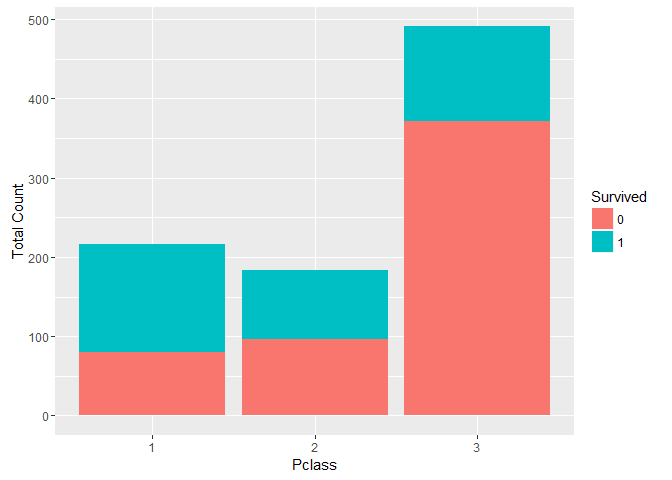
# Examine the first few names in the training data set
head(as.character(train$name))
# How many unique names are there across both train & test?
length(unique(as.character(data.combined$name)))
[1] 1307
# Two duplicate names, take a closer look
# First, get the duplicate names and store them as a vector
dup.names <- as.character(data.combined[which(duplicated(as.character(data.combined$name))), "name"])
# Next, take a look at the records in the combined data set
data.combined[which(data.combined$name %in% dup.names),]
survived pclass name sex age sibsp parch ticket
290 1 3 Connolly, Miss. Kate female 22.0 0 0 370373 697 0 3 Kelly, Mr. James male 44.0 0 0 363592 892 None 3 Kelly, Mr. James male 34.5 0 0 330911 898 None 3 Connolly, Miss. Kate female 30.0 0 0 330972 fare cabin embarked 290 7.7500 Q 697 8.0500 S 892 7.8292 Q 898 7.6292 Q
# What is up with the 'Miss.' and 'Mr.' thing?
library(stringr)
# Any correlation with other variables (e.g., sibsp)?
misses <- data.combined[which(str_detect(data.combined$name, "Miss.")),]
misses[1:5,]
survived pclass name sex age sibsp 3 1 3 Heikkinen, Miss. Laina female 26 0 11 1 3 Sandstrom, Miss. Marguerite Rut female 4 1 12 1 1 Bonnell, Miss. Elizabeth female 58 0 15 0 3 Vestrom, Miss. Hulda Amanda Adolfina female 14 0 23 1 3 McGowan, Miss. Anna “Annie” female 15 0 parch ticket fare cabin embarked 3 0 STON/O2. 3101282 7.9250 S 11 1 PP 9549 16.7000 G6 S 12 0 113783 26.5500 C103 S 15 0 350406 7.8542 S 23 0 330923 8.0292 Q
# Hypothesis - Name titles correlate with age
mrses <- data.combined[which(str_detect(data.combined$name, "Mrs.")), ]
mrses[1:5,]
survived pclass name 2 1 1 Cumings, Mrs. John Bradley (Florence Briggs Thayer) 4 1 1 Futrelle, Mrs. Jacques Heath (Lily May Peel) 9 1 3 Johnson, Mrs. Oscar W (Elisabeth Vilhelmina Berg) 10 1 2 Nasser, Mrs. Nicholas (Adele Achem) 16 1 2 Hewlett, Mrs. (Mary D Kingcome) sex age sibsp parch ticket fare cabin embarked 2 female 38 1 0 PC 17599 71.2833 C85 C 4 female 35 1 0 113803 53.1000 C123 S 9 female 27 0 2 347742 11.1333 S 10 female 14 1 0 237736 30.0708 C 16 female 55 0 0 248706 16.0000 S
# Check out males to see if pattern continues
males <- data.combined[which(train$sex == "male"), ]
males[1:5,]
survived pclass name sex age sibsp parch 1 0 3 Braund, Mr. Owen Harris male 22 1 0 5 0 3 Allen, Mr. William Henry male 35 0 0 6 0 3 Moran, Mr. James male NA 0 0 7 0 1 McCarthy, Mr. Timothy J male 54 0 0 8 0 3 Palsson, Master. Gosta Leonard male 2 3 1 ticket fare cabin embarked 1 A/5 21171 7.2500 S 5 373450 8.0500 S 6 330877 8.4583 Q 7 17463 51.8625 E46 S 8 349909 21.0750 S
# Expand upon the realtionship between `Survived` and `Pclass` by adding the new `Title` variable to the
# data set and then explore a potential 3-dimensional relationship.
# Create a utility function to help with title extraction
extractTitle <- function(name) {
name <- as.character(name)
if (length(grep("Miss.", name)) > 0) {
return ("Miss.")
} else if (length(grep("Master.", name)) > 0) {
return ("Master.")
} else if (length(grep("Mrs.", name)) > 0) {
return ("Mrs.")
} else if (length(grep("Mr.", name)) > 0) {
return ("Mr.")
} else {
return ("Other")
}
}
titles <- NULL
for (i in 1:nrow(data.combined)) {
titles <- c(titles, extractTitle(data.combined[i,"name"]))
}
data.combined$title <- as.factor(titles)
# Since we only have survived lables for the train set, only use the
# first 891 rows
ggplot(data.combined[1:891,], aes(x = title, fill = survived)) +
geom_bar() +
facet_wrap(~pclass) +
ggtitle("Pclass") +
xlab("Title") +
ylab("Total Count") +
labs(fill = "Survived")

4.2 Video2 - Data Analysis Part 2
https://www.youtube.com/watch?v=u6sahb7Hmog
# Video2 - Data Analysis Part 2 ----
# What's the distribution of females to males across train & test?
table(data.combined$sex)
##
## female male
## 466 843
# Visualize the 3-way relationship of sex, pclass, and survival, compare to analysis of title
ggplot(data.combined[1:891,], aes(x = sex, fill = survived)) +
geom_bar() +
facet_wrap(~pclass) +
ggtitle("Pclass") +
xlab("Sex") +
ylab("Total Count") +
labs(fill = "Survived")
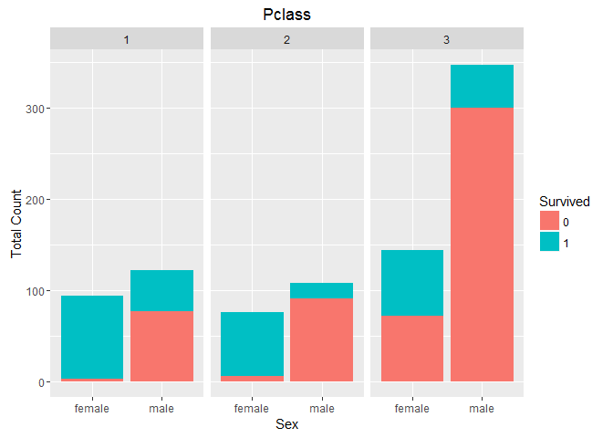
# OK, age and sex seem pretty important as derived from analysis of title, let's take a closer
# look at the distibutions of age over entire data set
summary(data.combined$age)
## Min. 1st Qu. Median Mean 3rd Qu. Max. NA's
## 0.17 21.00 28.00 29.88 39.00 80.00 263
summary(data.combined[1:891,"age"])
## Min. 1st Qu. Median Mean 3rd Qu. Max. NA's
## 0.42 20.12 28.00 29.70 38.00 80.00 177
# Just to be thorough, take a look at survival rates broken out by sex, pclass, and age
ggplot(data.combined[1:891,], aes(x = age, fill = survived)) +
facet_wrap(~sex + pclass) +
geom_histogram(binwidth = 10) +
xlab("Age") +
ylab("Total Count")
## Warning: Removed 177 rows containing non-finite values (stat_bin).
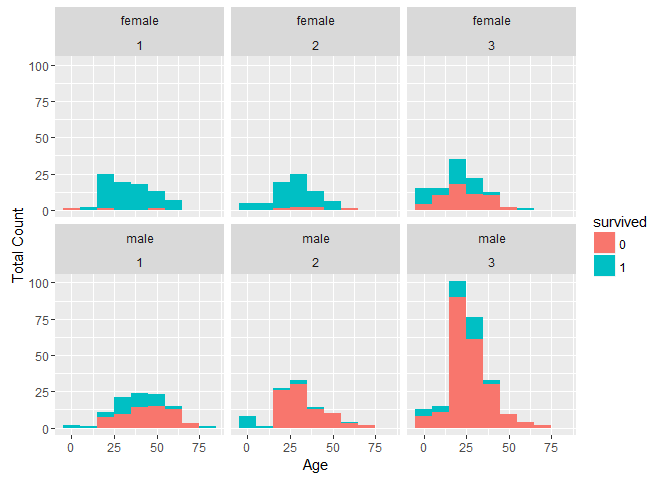
# Validate that "Master." is a good proxy for male children
boys <- data.combined[which(data.combined$title == "Master."),]
summary(boys$age)
## Min. 1st Qu. Median Mean 3rd Qu. Max. NA's
## 0.330 2.000 4.000 5.483 9.000 14.500 8
# We know that "Miss." is more complicated, let's examine further
misses <- data.combined[which(data.combined$title == "Miss."),]
summary(misses$age)
## Min. 1st Qu. Median Mean 3rd Qu. Max. NA's
## 0.17 15.00 22.00 21.77 30.00 63.00 50
ggplot(misses[misses$survived != "None" & !is.na(misses$age),], aes(x = age, fill = survived)) +
facet_wrap(~pclass) +
geom_histogram(binwidth = 5) +
ggtitle("Age for 'Miss.' by Pclass") +
xlab("Age") +
ylab("Total Count")

# OK, appears female children may have different survival rate,
# could be a candidate for feature engineering later
misses.alone <- misses[which(misses$sibsp == 0 & misses$parch == 0),]
summary(misses.alone$age)
## Min. 1st Qu. Median Mean 3rd Qu. Max. NA's
## 5.00 21.00 26.00 27.23 32.50 58.00 33
length(which(misses.alone$age <= 14.5))
## [1] 4
# Move on to the sibsp variable, summarize the variable
summary(data.combined$sibsp)
## Min. 1st Qu. Median Mean 3rd Qu. Max.
## 0.0000 0.0000 0.0000 0.4989 1.0000 8.0000
# Can we treat as a factor?
length(unique(data.combined$sibsp))
## [1] 7
data.combined$sibsp <- as.factor(data.combined$sibsp)
# We believe title is predictive. Visualize survival reates by sibsp, pclass, and title
ggplot(data.combined[1:891,], aes(x = sibsp, fill = survived)) +
geom_bar() +
facet_wrap(~pclass + title) +
ggtitle("Pclass, Title") +
xlab("SibSp") +
ylab("Total Count") +
ylim(0,300) +
labs(fill = "Survived")
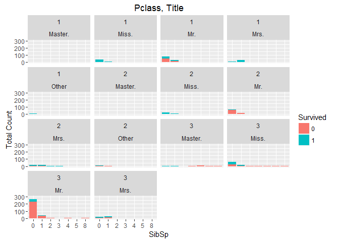
# Treat the parch vaiable as a factor and visualize
data.combined$parch <- as.factor(data.combined$parch)
ggplot(data.combined[1:891,], aes(x = parch, fill = survived)) +
geom_bar() +
facet_wrap(~pclass + title) +
ggtitle("Pclass, Title") +
xlab("ParCh") +
ylab("Total Count") +
ylim(0,300) +
labs(fill = "Survived")
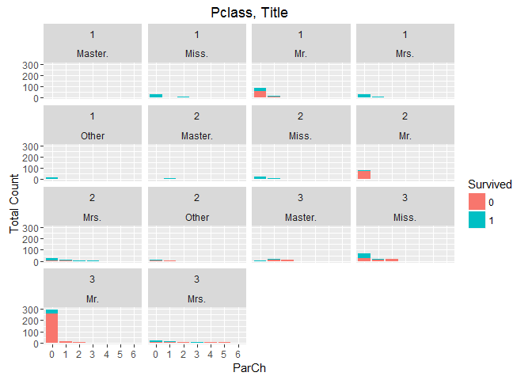
# Let's try some feature engineering. What about creating a family size feature?
temp.sibsp <- c(train$sibsp, test$sibsp)
temp.parch <- c(train$parch, test$parch)
data.combined$family.size <- as.factor(temp.sibsp + temp.parch + 1)
# Visualize it to see if it is predictive
ggplot(data.combined[1:891,], aes(x = family.size, fill = survived)) +
geom_bar() +
facet_wrap(~pclass + title) +
ggtitle("Pclass, Title") +
xlab("family.size") +
ylab("Total Count") +
ylim(0,300) +
labs(fill = "Survived")

4.3 Video3 - Data Analysis Part 3
https://www.youtube.com/watch?v=aMV_6LmCs4Q
# Video3 - Data Analysis Part 3 ----
# Take a look at the ticket variable
str(data.combined$ticket)
## Factor w/ 929 levels "110152","110413",..: 524 597 670 50 473 276 86 396 345 133 ...
# Based on the huge number of levels ticket really isn't a factor variable it is a string.
# Convert it and display first 20
data.combined$ticket <- as.character(data.combined$ticket)
data.combined$ticket[1:20]
## [1] "A/5 21171" "PC 17599" "STON/O2. 3101282"
## [4] "113803" "373450" "330877"
## [7] "17463" "349909" "347742"
## [10] "237736" "PP 9549" "113783"
## [13] "A/5. 2151" "347082" "350406"
## [16] "248706" "382652" "244373"
## [19] "345763" "2649"
# There's no immediately apparent structure in the data, let's see if we can find some.
# We'll start with taking a look at just the first char for each
ticket.first.char <- ifelse(data.combined$ticket == "", " ", substr(data.combined$ticket, 1, 1))
unique(ticket.first.char)
## [1] "A" "P" "S" "1" "3" "2" "C" "7" "W" "4" "F" "L" "9" "6" "5" "8"
# OK, we can make a factor for analysis purposes and visualize
data.combined$ticket.first.char <- as.factor(ticket.first.char)
# First, a high-level plot of the data
ggplot(data.combined[1:891,], aes(x = ticket.first.char, fill = survived)) +
geom_bar() +
ggtitle("Survivability by ticket.first.char") +
xlab("ticket.first.char") +
ylab("Total Count") +
ylim(0,350) +
labs(fill = "Survived")
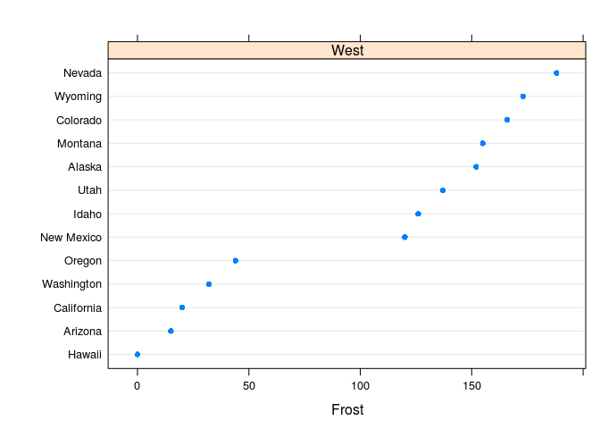
# Ticket seems like it might be predictive, drill down a bit
ggplot(data.combined[1:891,], aes(x = ticket.first.char, fill = survived)) +
geom_bar() +
facet_wrap(~pclass) +
ggtitle("Pclass") +
xlab("ticket.first.char") +
ylab("Total Count") +
ylim(0,150) +
labs(fill = "Survived")
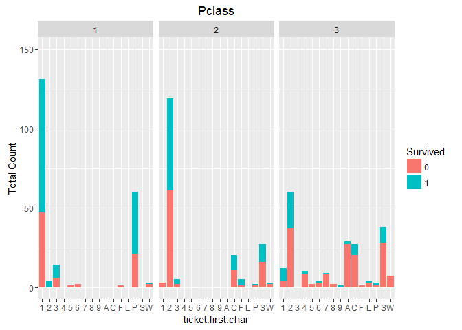
# Lastly, see if we get a pattern when using combination of pclass & title
ggplot(data.combined[1:891,], aes(x = ticket.first.char, fill = survived)) +
geom_bar() +
facet_wrap(~pclass + title) +
ggtitle("Pclass, Title") +
xlab("ticket.first.char") +
ylab("Total Count") +
ylim(0,200) +
labs(fill = "Survived")

# Next up - the fares Titanic passengers paid
summary(data.combined$fare)
## Min. 1st Qu. Median Mean 3rd Qu. Max. NA's
## 0.000 7.896 14.450 33.300 31.280 512.300 1
length(unique(data.combined$fare))
## [1] 282
# Can't make fare a factor, treat as numeric & visualize with histogram
ggplot(data.combined, aes(x = fare)) +
geom_histogram(binwidth = 5) +
ggtitle("Combined Fare Distribution") +
xlab("Fare") +
ylab("Total Count") +
ylim(0,200)
## Warning: Removed 1 rows containing non-finite values (stat_bin).

# Let's check to see if fare has predictive power
ggplot(data.combined[1:891,], aes(x = fare, fill = survived)) +
geom_histogram(binwidth = 5) +
facet_wrap(~pclass + title) +
ggtitle("Pclass, Title") +
xlab("fare") +
ylab("Total Count") +
ylim(0,50) +
labs(fill = "Survived")
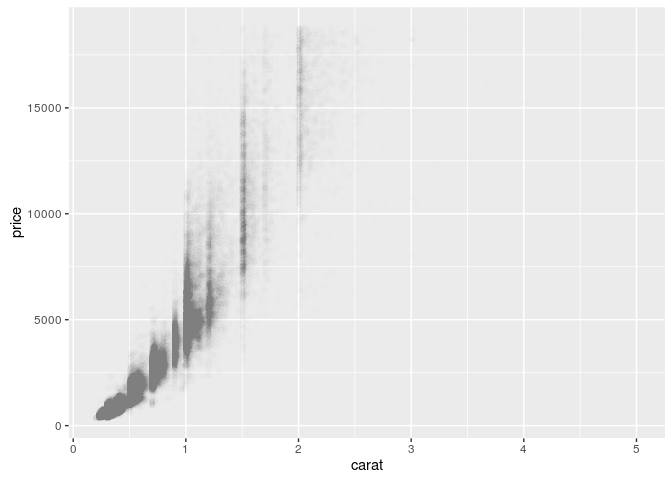
# Analysis of the cabin variable
str(data.combined$cabin)
## Factor w/ 187 levels "","A10","A14",..: 1 83 1 57 1 1 131 1 1 1 ...
# Cabin really isn't a factor, make a string and the display first 100
data.combined$cabin <- as.character(data.combined$cabin)
data.combined$cabin[1:100]
## [1] "" "C85" "" "C123" ""
## [6] "" "E46" "" "" ""
## [11] "G6" "C103" "" "" ""
## [16] "" "" "" "" ""
## [21] "" "D56" "" "A6" ""
## [26] "" "" "C23 C25 C27" "" ""
## [31] "" "B78" "" "" ""
## [36] "" "" "" "" ""
## [41] "" "" "" "" ""
## [46] "" "" "" "" ""
## [51] "" "" "D33" "" "B30"
## [56] "C52" "" "" "" ""
## [61] "" "B28" "C83" "" ""
## [66] "" "F33" "" "" ""
## [71] "" "" "" "" ""
## [76] "F G73" "" "" "" ""
## [81] "" "" "" "" ""
## [86] "" "" "" "C23 C25 C27" ""
## [91] "" "" "E31" "" ""
## [96] "" "A5" "D10 D12" "" ""
# Replace empty cabins with a "U"
data.combined[which(data.combined$cabin == ""), "cabin"] <- "U"
data.combined$cabin[1:100]
## [1] "U" "C85" "U" "C123" "U"
## [6] "U" "E46" "U" "U" "U"
## [11] "G6" "C103" "U" "U" "U"
## [16] "U" "U" "U" "U" "U"
## [21] "U" "D56" "U" "A6" "U"
## [26] "U" "U" "C23 C25 C27" "U" "U"
## [31] "U" "B78" "U" "U" "U"
## [36] "U" "U" "U" "U" "U"
## [41] "U" "U" "U" "U" "U"
## [46] "U" "U" "U" "U" "U"
## [51] "U" "U" "D33" "U" "B30"
## [56] "C52" "U" "U" "U" "U"
## [61] "U" "B28" "C83" "U" "U"
## [66] "U" "F33" "U" "U" "U"
## [71] "U" "U" "U" "U" "U"
## [76] "F G73" "U" "U" "U" "U"
## [81] "U" "U" "U" "U" "U"
## [86] "U" "U" "U" "C23 C25 C27" "U"
## [91] "U" "U" "E31" "U" "U"
## [96] "U" "A5" "D10 D12" "U" "U"
# Take a look at just the first char as a factor
cabin.first.char <- as.factor(substr(data.combined$cabin, 1, 1))
str(cabin.first.char)
## Factor w/ 9 levels "A","B","C","D",..: 9 3 9 3 9 9 5 9 9 9 ...
levels(cabin.first.char)
## [1] "A" "B" "C" "D" "E" "F" "G" "T" "U"
# Add to combined data set and plot
data.combined$cabin.first.char <- cabin.first.char
# High level plot
ggplot(data.combined[1:891,], aes(x = cabin.first.char, fill = survived)) +
geom_bar() +
ggtitle("Survivability by cabin.first.char") +
xlab("cabin.first.char") +
ylab("Total Count") +
ylim(0,750) +
labs(fill = "Survived")

# Could have some predictive power, drill in
ggplot(data.combined[1:891,], aes(x = cabin.first.char, fill = survived)) +
geom_bar() +
facet_wrap(~pclass) +
ggtitle("Survivability by cabin.first.char") +
xlab("Pclass") +
ylab("Total Count") +
ylim(0,500) +
labs(fill = "Survived")

# Does this feature improve upon pclass + title?
ggplot(data.combined[1:891,], aes(x = cabin.first.char, fill = survived)) +
geom_bar() +
facet_wrap(~pclass + title) +
ggtitle("Pclass, Title") +
xlab("cabin.first.char") +
ylab("Total Count") +
ylim(0,500) +
labs(fill = "Survived")

# What about folks with multiple cabins?
data.combined$cabin.multiple <- as.factor(ifelse(str_detect(data.combined$cabin, " "), "Y", "N"))
ggplot(data.combined[1:891,], aes(x = cabin.multiple, fill = survived)) +
geom_bar() +
facet_wrap(~pclass + title) +
ggtitle("Pclass, Title") +
xlab("cabin.multiple") +
ylab("Total Count") +
ylim(0,350) +
labs(fill = "Survived")

# Does survivability depend on where you got onboard the Titanic?
str(data.combined$embarked)
## Factor w/ 4 levels "","C","Q","S": 4 2 4 4 4 3 4 4 4 2 ...
levels(data.combined$embarked)
## [1] "" "C" "Q" "S"
# Plot data for analysis
ggplot(data.combined[1:891,], aes(x = embarked, fill = survived)) +
geom_bar() +
facet_wrap(~pclass + title) +
ggtitle("Pclass, Title") +
xlab("embarked") +
ylab("Total Count") +
ylim(0,300) +
labs(fill = "Survived")
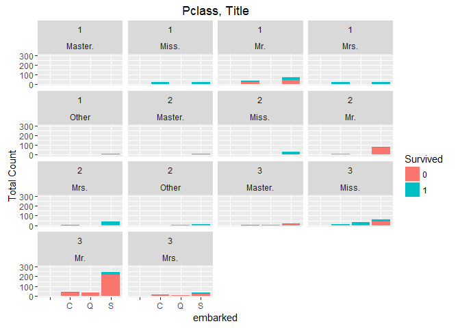
4.4 Video4 - Exploratory Modeling (Random Forests)
https://www.youtube.com/watch?v=UHJH7w9q4Lc
# Video4 - Exploratory Modeling ----
library(randomForest)
## Warning: package 'randomForest' was built under R version 3.3.2
## randomForest 4.6-12
## Type rfNews() to see new features/changes/bug fixes.
##
## Attaching package: 'randomForest'
## The following object is masked from 'package:ggplot2':
##
## margin
4.4.1 Train a Random Forest with the default parameters using pclass & title
rf.train.1 <- data.combined[1:891, c("pclass", "title")]
rf.label <- as.factor(train$survived)
set.seed(1234)
rf.1 <- randomForest(x = rf.train.1, y = rf.label, importance = TRUE, ntree = 1000)
rf.1
##
## Call:
## randomForest(x = rf.train.1, y = rf.label, ntree = 1000, importance = TRUE)
## Type of random forest: classification
## Number of trees: 1000
## No. of variables tried at each split: 1
##
## OOB estimate of error rate: 20.76%
## Confusion matrix:
## 0 1 class.error
## 0 538 11 0.02003643
## 1 174 168 0.50877193
varImpPlot(rf.1)

4.4.2 Train a Random Forest using pclass, title, & sibsp
rf.train.2 <- data.combined[1:891, c("pclass", "title", "sibsp")]
set.seed(1234)
rf.2 <- randomForest(x = rf.train.2, y = rf.label, importance = TRUE, ntree = 1000)
rf.2
##
## Call:
## randomForest(x = rf.train.2, y = rf.label, ntree = 1000, importance = TRUE)
## Type of random forest: classification
## Number of trees: 1000
## No. of variables tried at each split: 1
##
## OOB estimate of error rate: 19.75%
## Confusion matrix:
## 0 1 class.error
## 0 487 62 0.1129326
## 1 114 228 0.3333333
varImpPlot(rf.2)

4.4.3 Train a Random Forest using pclass, title, & parch
rf.train.3 <- data.combined[1:891, c("pclass", "title", "parch")]
set.seed(1234)
rf.3 <- randomForest(x = rf.train.3, y = rf.label, importance = TRUE, ntree = 1000)
rf.3
##
## Call:
## randomForest(x = rf.train.3, y = rf.label, ntree = 1000, importance = TRUE)
## Type of random forest: classification
## Number of trees: 1000
## No. of variables tried at each split: 1
##
## OOB estimate of error rate: 19.98%
## Confusion matrix:
## 0 1 class.error
## 0 495 54 0.09836066
## 1 124 218 0.36257310
varImpPlot(rf.3)
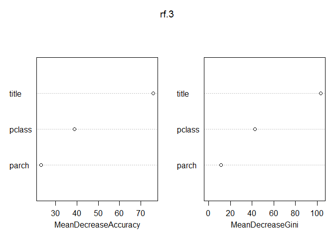
4.4.4 Train a Random Forest using pclass, title, sibsp, parch
rf.train.4 <- data.combined[1:891, c("pclass", "title", "sibsp", "parch")]
set.seed(1234)
rf.4 <- randomForest(x = rf.train.4, y = rf.label, importance = TRUE, ntree = 1000)
rf.4
##
## Call:
## randomForest(x = rf.train.4, y = rf.label, ntree = 1000, importance = TRUE)
## Type of random forest: classification
## Number of trees: 1000
## No. of variables tried at each split: 2
##
## OOB estimate of error rate: 18.52%
## Confusion matrix:
## 0 1 class.error
## 0 489 60 0.1092896
## 1 105 237 0.3070175
varImpPlot(rf.4)
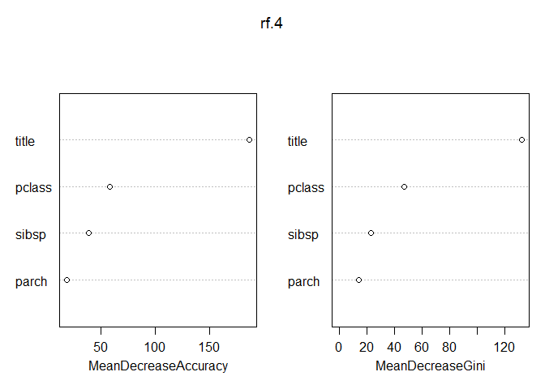
4.4.5 Train a Random Forest using pclass, title, & family.size
rf.train.5 <- data.combined[1:891, c("pclass", "title", "family.size")]
set.seed(1234)
rf.5 <- randomForest(x = rf.train.5, y = rf.label, importance = TRUE, ntree = 1000)
rf.5
##
## Call:
## randomForest(x = rf.train.5, y = rf.label, ntree = 1000, importance = TRUE)
## Type of random forest: classification
## Number of trees: 1000
## No. of variables tried at each split: 1
##
## OOB estimate of error rate: 18.41%
## Confusion matrix:
## 0 1 class.error
## 0 485 64 0.1165756
## 1 100 242 0.2923977
varImpPlot(rf.5)

4.4.6 Train a Random Forest using pclass, title, sibsp, & family.size
rf.train.6 <- data.combined[1:891, c("pclass", "title", "sibsp", "family.size")]
set.seed(1234)
rf.6 <- randomForest(x = rf.train.6, y = rf.label, importance = TRUE, ntree = 1000)
rf.6
##
## Call:
## randomForest(x = rf.train.6, y = rf.label, ntree = 1000, importance = TRUE)
## Type of random forest: classification
## Number of trees: 1000
## No. of variables tried at each split: 2
##
## OOB estimate of error rate: 18.74%
## Confusion matrix:
## 0 1 class.error
## 0 486 63 0.1147541
## 1 104 238 0.3040936
varImpPlot(rf.6)
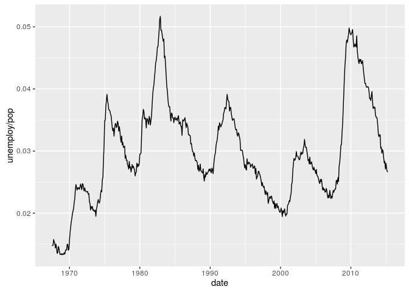
4.4.7 Train a Random Forest using pclass, title, parch, & family.size
rf.train.7 <- data.combined[1:891, c("pclass", "title", "parch", "family.size")]
set.seed(1234)
rf.7 <- randomForest(x = rf.train.7, y = rf.label, importance = TRUE, ntree = 1000)
rf.7
##
## Call:
## randomForest(x = rf.train.7, y = rf.label, ntree = 1000, importance = TRUE)
## Type of random forest: classification
## Number of trees: 1000
## No. of variables tried at each split: 2
##
## OOB estimate of error rate: 18.97%
## Confusion matrix:
## 0 1 class.error
## 0 486 63 0.1147541
## 1 106 236 0.3099415
varImpPlot(rf.7)
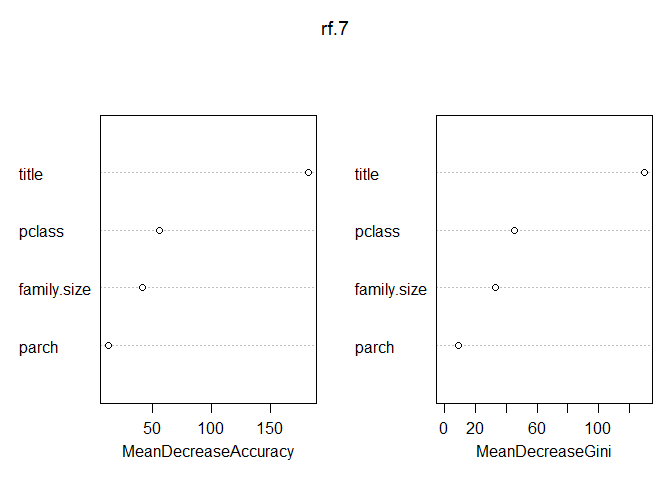
4.5 Video5 - Cross Validation
https://www.youtube.com/watch?v=84JSk36og34
# Video5 - Cross Validation ----
# Before we jump into features engineering we need to establish a methodology
# for estimating our error rate on the test set (i.e., unseen data). This is
# critical, for without this we are more likely to overfit. Let's start with a
# submission of rf.5 to Kaggle to see if our OOB error estimate is accurate.
# Subset our test records and features
test.submit.df <- data.combined[892:1309, c("pclass", "title", "family.size")]
# Make predictions
rf.5.preds <- predict(rf.5, test.submit.df)
table(rf.5.preds)
## rf.5.preds
## 0 1
## 258 160
# Write out a CSV file for submission to Kaggle
submit.df <- data.frame(PassengerId = rep(892:1309), Survived = rf.5.preds)
write.csv(submit.df, file = "RF_SUB_20160215_1.csv", row.names = FALSE)
# Our submission scores 0.79426, but the OOB predicts that we should score 0.8159.
# Let's look into cross-validation using the caret package to see if we can get
# more accurate estimates
library(caret)
## Loading required package: lattice
library(doSNOW)
## Warning: package 'doSNOW' was built under R version 3.3.2
## Loading required package: foreach
## Loading required package: iterators
## Loading required package: snow
## Warning: package 'snow' was built under R version 3.3.2
# Research has shown that 10-fold CV repeated 10 times is the best place to start,
# however there are no hard and fast rules - this is where the experience of the
# Data Scientist (i.e., the "art") comes into play. We'll start with 10-fold CV,
# repeated 10 times and see how it goes.
# Leverage caret to create 100 total folds, but ensure that the ratio of those
# that survived and perished in each fold matches the overall training set. This
# is known as stratified cross validation and generally provides better results.
set.seed(2348)
cv.10.folds <- createMultiFolds(rf.label, k = 10, times = 10)
# Check stratification
table(rf.label)
## rf.label
## 0 1
## 549 342
342 / 549
## [1] 0.6229508
table(rf.label[cv.10.folds[[33]]])
##
## 0 1
## 494 308
308 / 494
## [1] 0.6234818
# Set up caret's trainControl object per above.
ctrl.1 <- trainControl(method = "repeatedcv", number = 10, repeats = 10,
index = cv.10.folds)
# Set up doSNOW package for multi-core training. This is helpful as we're going
# to be training a lot of trees.
# NOTE - This works on Windows and Mac, unlike doMC
cl <- makeCluster(6, type = "SOCK")
registerDoSNOW(cl)
# Set seed for reproducibility and train
set.seed(34324)
rf.5.cv.1 <- train(x = rf.train.5, y = rf.label, method = "rf", tuneLength = 3,
ntree = 1000, trControl = ctrl.1)
## note: only 2 unique complexity parameters in default grid. Truncating the grid to 2 .
#Shutdown cluster
stopCluster(cl)
# Check out results
rf.5.cv.1
## Random Forest
##
## 891 samples
## 3 predictor
## 2 classes: '0', '1'
##
## No pre-processing
## Resampling: Cross-Validated (10 fold, repeated 10 times)
## Summary of sample sizes: 801, 802, 802, 803, 802, 801, ...
## Resampling results across tuning parameters:
##
## mtry Accuracy Kappa
## 2 0.8121316 0.5929087
## 3 0.8089966 0.5852138
##
## Accuracy was used to select the optimal model using the largest value.
## The final value used for the model was mtry = 2.
# The above is only slightly more pessimistic than the rf.5 OOB prediction, but
# not pessimistic enough. Let's try 5-fold CV repeated 10 times.
set.seed(5983)
cv.5.folds <- createMultiFolds(rf.label, k = 5, times = 10)
ctrl.2 <- trainControl(method = "repeatedcv", number = 5, repeats = 10,
index = cv.5.folds)
cl <- makeCluster(6, type = "SOCK")
registerDoSNOW(cl)
set.seed(89472)
rf.5.cv.2 <- train(x = rf.train.5, y = rf.label, method = "rf", tuneLength = 3,
ntree = 1000, trControl = ctrl.2)
## note: only 2 unique complexity parameters in default grid. Truncating the grid to 2 .
#Shutdown cluster
stopCluster(cl)
# Check out results
rf.5.cv.2
## Random Forest
##
## 891 samples
## 3 predictor
## 2 classes: '0', '1'
##
## No pre-processing
## Resampling: Cross-Validated (5 fold, repeated 10 times)
## Summary of sample sizes: 713, 713, 713, 713, 712, 713, ...
## Resampling results across tuning parameters:
##
## mtry Accuracy Kappa
## 2 0.8128009 0.5958137
## 3 0.8092105 0.5875778
##
## Accuracy was used to select the optimal model using the largest value.
## The final value used for the model was mtry = 2.
# 5-fold CV isn't better. Move to 3-fold CV repeated 10 times.
set.seed(37596)
cv.3.folds <- createMultiFolds(rf.label, k = 3, times = 10)
ctrl.3 <- trainControl(method = "repeatedcv", number = 3, repeats = 10,
index = cv.3.folds)
cl <- makeCluster(6, type = "SOCK")
registerDoSNOW(cl)
set.seed(94622)
rf.5.cv.3 <- train(x = rf.train.5, y = rf.label, method = "rf", tuneLength = 3,
ntree = 64, trControl = ctrl.3)
## note: only 2 unique complexity parameters in default grid. Truncating the grid to 2 .
#Shutdown cluster
stopCluster(cl)
# Check out results
rf.5.cv.3
## Random Forest
##
## 891 samples
## 3 predictor
## 2 classes: '0', '1'
##
## No pre-processing
## Resampling: Cross-Validated (3 fold, repeated 10 times)
## Summary of sample sizes: 594, 594, 594, 594, 594, 594, ...
## Resampling results across tuning parameters:
##
## mtry Accuracy Kappa
## 2 0.8098765 0.5859242
## 3 0.8062851 0.5772994
##
## Accuracy was used to select the optimal model using the largest value.
## The final value used for the model was mtry = 2.
4.6 Video6 - Exploratory Modeling 2
https://www.youtube.com/watch?v=2nNjvjeAO4s
# Video6 - Exploratory Modeling 2 ----
# Let's use a single decision tree to better understand what's going on with our
# features. Obviously Random Forests are far more powerful than single trees,
# but single trees have the advantage of being easier to understand.
# Install and load packages
#install.packages("rpart")
#install.packages("rpart.plot")
library(rpart)
library(rpart.plot)
## Warning: package 'rpart.plot' was built under R version 3.3.2
# Per video #5, let's use 3-fold CV repeated 10 times
# Create utility function
rpart.cv <- function(seed, training, labels, ctrl) {
cl <- makeCluster(6, type = "SOCK")
registerDoSNOW(cl)
set.seed(seed)
# Leverage formula interface for training
rpart.cv <- train(x = training, y = labels, method = "rpart", tuneLength = 30,
trControl = ctrl)
#Shutdown cluster
stopCluster(cl)
return (rpart.cv)
}
# Grab features
features <- c("pclass", "title", "family.size")
rpart.train.1 <- data.combined[1:891, features]
# Run CV and check out results
rpart.1.cv.1 <- rpart.cv(94622, rpart.train.1, rf.label, ctrl.3)
rpart.1.cv.1
## CART
##
## 891 samples
## 3 predictor
## 2 classes: '0', '1'
##
## No pre-processing
## Resampling: Cross-Validated (3 fold, repeated 10 times)
## Summary of sample sizes: 594, 594, 594, 594, 594, 594, ...
## Resampling results across tuning parameters:
##
## cp Accuracy Kappa
## 0.00000000 0.8093154 0.5872691
## 0.01542650 0.8151515 0.6021814
## 0.03085299 0.8170595 0.6073245
## 0.04627949 0.8035915 0.5819021
## 0.06170599 0.7866442 0.5481020
## 0.07713249 0.7877666 0.5520131
## 0.09255898 0.7869809 0.5506934
## 0.10798548 0.7832772 0.5443564
## 0.12341198 0.7821549 0.5426317
## 0.13883848 0.7820426 0.5427793
## 0.15426497 0.7820426 0.5427793
## 0.16969147 0.7820426 0.5427793
## 0.18511797 0.7820426 0.5427793
## 0.20054446 0.7820426 0.5427793
## 0.21597096 0.7820426 0.5427793
## 0.23139746 0.7820426 0.5427793
## 0.24682396 0.7820426 0.5427793
## 0.26225045 0.7820426 0.5427793
## 0.27767695 0.7820426 0.5427793
## 0.29310345 0.7820426 0.5427793
## 0.30852995 0.7820426 0.5427793
## 0.32395644 0.7820426 0.5427793
## 0.33938294 0.7820426 0.5427793
## 0.35480944 0.7820426 0.5427793
## 0.37023593 0.7820426 0.5427793
## 0.38566243 0.7820426 0.5427793
## 0.40108893 0.7757576 0.5230281
## 0.41651543 0.7631874 0.4835751
## 0.43194192 0.7270483 0.3685616
## 0.44736842 0.6927048 0.2567765
##
## Accuracy was used to select the optimal model using the largest value.
## The final value used for the model was cp = 0.03085299.
# Plot
prp(rpart.1.cv.1$finalModel, type = 0, extra = 1, under = TRUE)
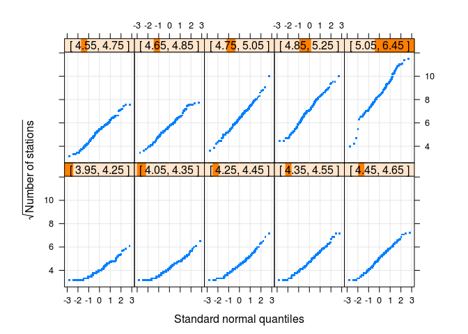
# The plot bring out some interesting lines of investigation. Namely:
# 1 - Titles of "Mr." and "Other" are predicted to perish at an
# overall accuracy rate of 83.2 %.
# 2 - Titles of "Master.", "Miss.", & "Mrs." in 1st & 2nd class
# are predicted to survive at an overall accuracy rate of 94.9%.
# 3 - Titles of "Master.", "Miss.", & "Mrs." in 3rd class with
# family sizes equal to 5, 6, 8, & 11 are predicted to perish
# with 100% accuracy.
# 4 - Titles of "Master.", "Miss.", & "Mrs." in 3rd class with
# family sizes not equal to 5, 6, 8, or 11 are predicted to
# survive with 59.6% accuracy.
# Both rpart and rf confirm that title is important, let's investigate further
table(data.combined$title)
##
## Master. Miss. Mr. Mrs. Other
## 61 260 758 199 31
# Parse out last name and title
data.combined[1:25, "name"]
## [1] Braund, Mr. Owen Harris
## [2] Cumings, Mrs. John Bradley (Florence Briggs Thayer)
## [3] Heikkinen, Miss. Laina
## [4] Futrelle, Mrs. Jacques Heath (Lily May Peel)
## [5] Allen, Mr. William Henry
## [6] Moran, Mr. James
## [7] McCarthy, Mr. Timothy J
## [8] Palsson, Master. Gosta Leonard
## [9] Johnson, Mrs. Oscar W (Elisabeth Vilhelmina Berg)
## [10] Nasser, Mrs. Nicholas (Adele Achem)
## [11] Sandstrom, Miss. Marguerite Rut
## [12] Bonnell, Miss. Elizabeth
## [13] Saundercock, Mr. William Henry
## [14] Andersson, Mr. Anders Johan
## [15] Vestrom, Miss. Hulda Amanda Adolfina
## [16] Hewlett, Mrs. (Mary D Kingcome)
## [17] Rice, Master. Eugene
## [18] Williams, Mr. Charles Eugene
## [19] Vander Planke, Mrs. Julius (Emelia Maria Vandemoortele)
## [20] Masselmani, Mrs. Fatima
## [21] Fynney, Mr. Joseph J
## [22] Beesley, Mr. Lawrence
## [23] McGowan, Miss. Anna "Annie"
## [24] Sloper, Mr. William Thompson
## [25] Palsson, Miss. Torborg Danira
## 1307 Levels: Abbing, Mr. Anthony ... Zakarian, Mr. Ortin
name.splits <- str_split(data.combined$name, ",")
name.splits[1]
## [[1]]
## [1] "Braund" " Mr. Owen Harris"
last.names <- sapply(name.splits, "[", 1)
last.names[1:10]
## [1] "Braund" "Cumings" "Heikkinen" "Futrelle" "Allen"
## [6] "Moran" "McCarthy" "Palsson" "Johnson" "Nasser"
# Add last names to dataframe in case we find it useful later
data.combined$last.name <- last.names
# Now for titles
name.splits <- str_split(sapply(name.splits, "[", 2), " ")
titles <- sapply(name.splits, "[", 2)
unique(titles)
## [1] "Mr." "Mrs." "Miss." "Master." "Don."
## [6] "Rev." "Dr." "Mme." "Ms." "Major."
## [11] "Lady." "Sir." "Mlle." "Col." "Capt."
## [16] "the" "Jonkheer." "Dona."
# What's up with a title of 'the'?
data.combined[which(titles == "the"),]
## survived pclass
## 760 1 1
## name sex age
## 760 Rothes, the Countess. of (Lucy Noel Martha Dyer-Edwards) female 33
## sibsp parch ticket fare cabin embarked title family.size
## 760 0 0 110152 86.5 B77 S Other 1
## ticket.first.char cabin.first.char cabin.multiple last.name
## 760 1 B N Rothes
# Re-map titles to be more exact
titles[titles %in% c("Dona.", "the")] <- "Lady."
titles[titles %in% c("Ms.", "Mlle.")] <- "Miss."
titles[titles == "Mme."] <- "Mrs."
titles[titles %in% c("Jonkheer.", "Don.")] <- "Sir."
titles[titles %in% c("Col.", "Capt.", "Major.")] <- "Officer"
table(titles)
## titles
## Dr. Lady. Master. Miss. Mr. Mrs. Officer Rev. Sir.
## 8 3 61 264 757 198 7 8 3
# Make title a factor
data.combined$new.title <- as.factor(titles)
# Visualize new version of title
ggplot(data.combined[1:891,], aes(x = new.title, fill = survived)) +
geom_bar() +
facet_wrap(~ pclass) +
ggtitle("Surival Rates for new.title by pclass")

# Collapse titles based on visual analysis
indexes <- which(data.combined$new.title == "Lady.")
data.combined$new.title[indexes] <- "Mrs."
indexes <- which(data.combined$new.title == "Dr." |
data.combined$new.title == "Rev." |
data.combined$new.title == "Sir." |
data.combined$new.title == "Officer")
data.combined$new.title[indexes] <- "Mr."
# Visualize
ggplot(data.combined[1:891,], aes(x = new.title, fill = survived)) +
geom_bar() +
facet_wrap(~ pclass) +
ggtitle("Surival Rates for Collapsed new.title by pclass")

# Grab features
features <- c("pclass", "new.title", "family.size")
rpart.train.2 <- data.combined[1:891, features]
# Run CV and check out results
rpart.2.cv.1 <- rpart.cv(94622, rpart.train.2, rf.label, ctrl.3)
rpart.2.cv.1
## CART
##
## 891 samples
## 3 predictor
## 2 classes: '0', '1'
##
## No pre-processing
## Resampling: Cross-Validated (3 fold, repeated 10 times)
## Summary of sample sizes: 594, 594, 594, 594, 594, 594, ...
## Resampling results across tuning parameters:
##
## cp Accuracy Kappa
## 0.00000000 0.8178451 0.6047735
## 0.01582980 0.8261504 0.6252869
## 0.03165961 0.8280584 0.6303902
## 0.04748941 0.8145903 0.6049449
## 0.06331922 0.7936027 0.5633852
## 0.07914902 0.7947250 0.5672045
## 0.09497883 0.7939394 0.5658414
## 0.11080863 0.7929293 0.5641059
## 0.12663844 0.7924804 0.5634784
## 0.14246824 0.7923681 0.5635873
## 0.15829804 0.7923681 0.5635873
## 0.17412785 0.7923681 0.5635873
## 0.18995765 0.7923681 0.5635873
## 0.20578746 0.7923681 0.5635873
## 0.22161726 0.7923681 0.5635873
## 0.23744707 0.7923681 0.5635873
## 0.25327687 0.7923681 0.5635873
## 0.26910667 0.7923681 0.5635873
## 0.28493648 0.7923681 0.5635873
## 0.30076628 0.7923681 0.5635873
## 0.31659609 0.7923681 0.5635873
## 0.33242589 0.7923681 0.5635873
## 0.34825570 0.7923681 0.5635873
## 0.36408550 0.7923681 0.5635873
## 0.37991531 0.7923681 0.5635873
## 0.39574511 0.7923681 0.5635873
## 0.41157491 0.7923681 0.5635873
## 0.42740472 0.7719416 0.5013069
## 0.44323452 0.7271605 0.3617107
## 0.45906433 0.7025814 0.2840360
##
## Accuracy was used to select the optimal model using the largest value.
## The final value used for the model was cp = 0.03165961.
# Plot
prp(rpart.2.cv.1$finalModel, type = 0, extra = 1, under = TRUE)

# Dive in on 1st class Mr."
indexes.first.mr <- which(data.combined$new.title == "Mr." & data.combined$pclass == "1")
first.mr.df <- data.combined[indexes.first.mr, ]
summary(first.mr.df)
## survived pclass name sex
## 0 :77 1:175 Anderson, Mr. Harry : 1 female: 1
## 1 :43 2: 0 Andrews, Mr. Thomas Jr : 1 male :174
## None:55 3: 0 Artagaveytia, Mr. Ramon : 1
## Barkworth, Mr. Algernon Henry Wilson: 1
## Baumann, Mr. John D : 1
## Baxter, Mr. Quigg Edmond : 1
## (Other) :169
## age sibsp parch ticket fare
## Min. :17.00 0:122 0 :146 Length:175 Min. : 0.00
## 1st Qu.:31.00 1: 50 1 : 21 Class :character 1st Qu.: 27.72
## Median :42.00 2: 2 2 : 6 Mode :character Median : 45.50
## Mean :42.24 3: 1 3 : 1 Mean : 67.35
## 3rd Qu.:50.50 4: 0 4 : 1 3rd Qu.: 78.07
## Max. :80.00 5: 0 5 : 0 Max. :512.33
## NA's :28 8: 0 (Other): 0
## cabin embarked title family.size ticket.first.char
## Length:175 : 0 Master.: 0 1 :109 1 :110
## Class :character C: 68 Miss. : 0 2 : 45 P : 45
## Mode :character Q: 1 Mr. :160 3 : 16 3 : 8
## S:106 Mrs. : 0 4 : 2 6 : 4
## Other : 15 6 : 2 2 : 3
## 5 : 1 F : 2
## (Other): 0 (Other): 3
## cabin.first.char cabin.multiple last.name new.title
## C :47 N:162 Length:175 Mr. :175
## U :44 Y: 13 Class :character Dr. : 0
## B :27 Mode :character Lady. : 0
## D :20 Master.: 0
## E :19 Miss. : 0
## A :17 Mrs. : 0
## (Other): 1 (Other): 0
# One female?
first.mr.df[first.mr.df$sex == "female",]
## survived pclass name sex age sibsp parch
## 797 1 1 Leader, Dr. Alice (Farnham) female 49 0 0
## ticket fare cabin embarked title family.size ticket.first.char
## 797 17465 25.9292 D17 S Other 1 1
## cabin.first.char cabin.multiple last.name new.title
## 797 D N Leader Mr.
# Update new.title feature
indexes <- which(data.combined$new.title == "Mr." &
data.combined$sex == "female")
data.combined$new.title[indexes] <- "Mrs."
# Any other gender slip ups?
length(which(data.combined$sex == "female" &
(data.combined$new.title == "Master." |
data.combined$new.title == "Mr.")))
## [1] 0
# Refresh data frame
indexes.first.mr <- which(data.combined$new.title == "Mr." & data.combined$pclass == "1")
first.mr.df <- data.combined[indexes.first.mr, ]
# Let's look at surviving 1st class "Mr."
summary(first.mr.df[first.mr.df$survived == "1",])
## survived pclass name
## 0 : 0 1:42 Anderson, Mr. Harry : 1
## 1 :42 2: 0 Barkworth, Mr. Algernon Henry Wilson : 1
## None: 0 3: 0 Beckwith, Mr. Richard Leonard : 1
## Behr, Mr. Karl Howell : 1
## Bishop, Mr. Dickinson H : 1
## Bjornstrom-Steffansson, Mr. Mauritz Hakan: 1
## (Other) :36
## sex age sibsp parch ticket
## female: 0 Min. :17.00 0:28 0 :36 Length:42
## male :42 1st Qu.:28.00 1:13 1 : 4 Class :character
## Median :36.00 2: 1 2 : 2 Mode :character
## Mean :38.76 3: 0 3 : 0
## 3rd Qu.:48.00 4: 0 4 : 0
## Max. :80.00 5: 0 5 : 0
## NA's :5 8: 0 (Other): 0
## fare cabin embarked title family.size
## Min. : 26.29 Length:42 : 0 Master.: 0 1 :25
## 1st Qu.: 27.34 Class :character C:17 Miss. : 0 2 :12
## Median : 35.50 Mode :character Q: 0 Mr. :38 3 : 4
## Mean : 71.55 S:25 Mrs. : 0 4 : 1
## 3rd Qu.: 73.39 Other : 4 5 : 0
## Max. :512.33 6 : 0
## (Other): 0
## ticket.first.char cabin.first.char cabin.multiple last.name
## 1 :30 C :10 N:39 Length:42
## P :11 E : 8 Y: 3 Class :character
## 2 : 1 B : 7 Mode :character
## 3 : 0 D : 6
## 4 : 0 U : 6
## 5 : 0 A : 5
## (Other): 0 (Other): 0
## new.title
## Mr. :42
## Dr. : 0
## Lady. : 0
## Master.: 0
## Miss. : 0
## Mrs. : 0
## (Other): 0
View(first.mr.df[first.mr.df$survived == "1",])
# Take a look at some of the high fares
indexes <- which(data.combined$ticket == "PC 17755" |
data.combined$ticket == "PC 17611" |
data.combined$ticket == "113760")
View(data.combined[indexes,])
# Visualize survival rates for 1st class "Mr." by fare
ggplot(first.mr.df, aes(x = fare, fill = survived)) +
geom_density(alpha = 0.5) +
ggtitle("1st Class 'Mr.' Survival Rates by fare")

# Engineer features based on all the passengers with the same ticket
ticket.party.size <- rep(0, nrow(data.combined))
avg.fare <- rep(0.0, nrow(data.combined))
tickets <- unique(data.combined$ticket)
for (i in 1:length(tickets)) {
current.ticket <- tickets[i]
party.indexes <- which(data.combined$ticket == current.ticket)
current.avg.fare <- data.combined[party.indexes[1], "fare"] / length(party.indexes)
for (k in 1:length(party.indexes)) {
ticket.party.size[party.indexes[k]] <- length(party.indexes)
avg.fare[party.indexes[k]] <- current.avg.fare
}
}
data.combined$ticket.party.size <- ticket.party.size
data.combined$avg.fare <- avg.fare
# Refresh 1st class "Mr." dataframe
first.mr.df <- data.combined[indexes.first.mr, ]
summary(first.mr.df)
## survived pclass name sex
## 0 :77 1:174 Anderson, Mr. Harry : 1 female: 0
## 1 :42 2: 0 Andrews, Mr. Thomas Jr : 1 male :174
## None:55 3: 0 Artagaveytia, Mr. Ramon : 1
## Barkworth, Mr. Algernon Henry Wilson: 1
## Baumann, Mr. John D : 1
## Baxter, Mr. Quigg Edmond : 1
## (Other) :168
## age sibsp parch ticket fare
## Min. :17.00 0:121 0 :145 Length:174 Min. : 0.00
## 1st Qu.:31.00 1: 50 1 : 21 Class :character 1st Qu.: 27.72
## Median :42.00 2: 2 2 : 6 Mode :character Median : 46.30
## Mean :42.20 3: 1 3 : 1 Mean : 67.58
## 3rd Qu.:50.75 4: 0 4 : 1 3rd Qu.: 78.46
## Max. :80.00 5: 0 5 : 0 Max. :512.33
## NA's :28 8: 0 (Other): 0
## cabin embarked title family.size ticket.first.char
## Length:174 : 0 Master.: 0 1 :108 1 :109
## Class :character C: 68 Miss. : 0 2 : 45 P : 45
## Mode :character Q: 1 Mr. :160 3 : 16 3 : 8
## S:105 Mrs. : 0 4 : 2 6 : 4
## Other : 14 6 : 2 2 : 3
## 5 : 1 F : 2
## (Other): 0 (Other): 3
## cabin.first.char cabin.multiple last.name new.title
## C :47 N:161 Length:174 Mr. :174
## U :44 Y: 13 Class :character Dr. : 0
## B :27 Mode :character Lady. : 0
## D :19 Master.: 0
## E :19 Miss. : 0
## A :17 Mrs. : 0
## (Other): 1 (Other): 0
## ticket.party.size avg.fare
## Min. :1.000 Min. : 0.00
## 1st Qu.:1.000 1st Qu.: 26.43
## Median :1.500 Median : 29.29
## Mean :1.902 Mean : 32.36
## 3rd Qu.:2.000 3rd Qu.: 37.59
## Max. :7.000 Max. :128.08
##
# Visualize new features
ggplot(first.mr.df[first.mr.df$survived != "None",], aes(x = ticket.party.size, fill = survived)) +
geom_density(alpha = 0.5) +
ggtitle("Survival Rates 1st Class 'Mr.' by ticket.party.size")
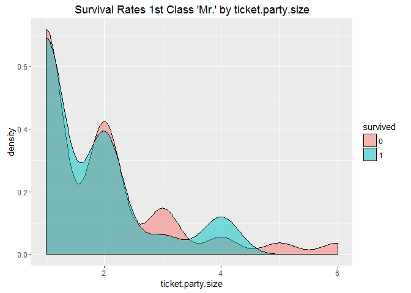
ggplot(first.mr.df[first.mr.df$survived != "None",], aes(x = avg.fare, fill = survived)) +
geom_density(alpha = 0.5) +
ggtitle("Survival Rates 1st Class 'Mr.' by avg.fare")

# Hypothesis - ticket.party.size is highly correlated with avg.fare
summary(data.combined$avg.fare)
## Min. 1st Qu. Median Mean 3rd Qu. Max. NA's
## 0.00 7.55 8.05 14.76 15.01 128.10 1
# One missing value, take a look
data.combined[is.na(data.combined$avg.fare), ]
## survived pclass name sex age sibsp parch ticket fare
## 1044 None 3 Storey, Mr. Thomas male 60.5 0 0 3701 NA
## cabin embarked title family.size ticket.first.char cabin.first.char
## 1044 U S Mr. 1 3 U
## cabin.multiple last.name new.title ticket.party.size avg.fare
## 1044 N Storey Mr. 1 NA
# Get records for similar passengers and summarize avg.fares
indexes <- with(data.combined, which(pclass == "3" & title == "Mr." & family.size == 1 &
ticket != "3701"))
similar.na.passengers <- data.combined[indexes,]
summary(similar.na.passengers$avg.fare)
## Min. 1st Qu. Median Mean 3rd Qu. Max.
## 0.000 7.250 7.840 7.717 8.050 10.170
# Use median since close to mean and a little higher than mean
data.combined[is.na(avg.fare), "avg.fare"] <- 7.840
# Leverage caret's preProcess function to normalize data
preproc.data.combined <- data.combined[, c("ticket.party.size", "avg.fare")]
preProc <- preProcess(preproc.data.combined, method = c("center", "scale"))
postproc.data.combined <- predict(preProc, preproc.data.combined)
# Hypothesis refuted for all data
cor(postproc.data.combined$ticket.party.size, postproc.data.combined$avg.fare)
## [1] 0.09428625
# How about for just 1st class all-up?
indexes <- which(data.combined$pclass == "1")
cor(postproc.data.combined$ticket.party.size[indexes],
postproc.data.combined$avg.fare[indexes])
## [1] 0.2576249
# Hypothesis refuted again
# OK, let's see if our feature engineering has made any difference
features <- c("pclass", "new.title", "family.size", "ticket.party.size", "avg.fare")
rpart.train.3 <- data.combined[1:891, features]
# Run CV and check out results
rpart.3.cv.1 <- rpart.cv(94622, rpart.train.3, rf.label, ctrl.3)
rpart.3.cv.1
## CART
##
## 891 samples
## 5 predictor
## 2 classes: '0', '1'
##
## No pre-processing
## Resampling: Cross-Validated (3 fold, repeated 10 times)
## Summary of sample sizes: 594, 594, 594, 594, 594, 594, ...
## Resampling results across tuning parameters:
##
## cp Accuracy Kappa
## 0.00000000 0.8214366 0.6170703
## 0.01593063 0.8315376 0.6352241
## 0.03186126 0.8305275 0.6336075
## 0.04779189 0.8157127 0.6070448
## 0.06372252 0.7965208 0.5710962
## 0.07965316 0.7958474 0.5698216
## 0.09558379 0.7950617 0.5684585
## 0.11151442 0.7940516 0.5667230
## 0.12744505 0.7936027 0.5660955
## 0.14337568 0.7934905 0.5662044
## 0.15930631 0.7934905 0.5662044
## 0.17523694 0.7934905 0.5662044
## 0.19116757 0.7934905 0.5662044
## 0.20709821 0.7934905 0.5662044
## 0.22302884 0.7934905 0.5662044
## 0.23895947 0.7934905 0.5662044
## 0.25489010 0.7934905 0.5662044
## 0.27082073 0.7934905 0.5662044
## 0.28675136 0.7934905 0.5662044
## 0.30268199 0.7934905 0.5662044
## 0.31861262 0.7934905 0.5662044
## 0.33454325 0.7934905 0.5662044
## 0.35047389 0.7934905 0.5662044
## 0.36640452 0.7934905 0.5662044
## 0.38233515 0.7934905 0.5662044
## 0.39826578 0.7934905 0.5662044
## 0.41419641 0.7934905 0.5662044
## 0.43012704 0.7730640 0.5039239
## 0.44605767 0.7534231 0.4431483
## 0.46198830 0.6858586 0.2299565
##
## Accuracy was used to select the optimal model using the largest value.
## The final value used for the model was cp = 0.01593063.
# Plot
prp(rpart.3.cv.1$finalModel, type = 0, extra = 1, under = TRUE)

4.7 Video7 Submitting, scoring, and some analysis
https://www.youtube.com/watch?v=fuB7s19g3nQ
# Video7 Submitting, scoring, and some analysis ----
#
# Rpart scores 0.80383
#
# Subset our test records and features
test.submit.df <- data.combined[892:1309, features]
# Make predictions
rpart.3.preds <- predict(rpart.3.cv.1$finalModel, test.submit.df, type = "class")
table(rpart.3.preds)
## rpart.3.preds
## 0 1
## 266 152
# Write out a CSV file for submission to Kaggle
submit.df <- data.frame(PassengerId = rep(892:1309), Survived = rpart.3.preds)
write.csv(submit.df, file = "RPART_SUB_20160619_1.csv", row.names = FALSE)
#
# Random forest scores 0.80861
#
features <- c("pclass", "new.title", "ticket.party.size", "avg.fare")
rf.train.temp <- data.combined[1:891, features]
set.seed(1234)
rf.temp <- randomForest(x = rf.train.temp, y = rf.label, ntree = 1000)
rf.temp
##
## Call:
## randomForest(x = rf.train.temp, y = rf.label, ntree = 1000)
## Type of random forest: classification
## Number of trees: 1000
## No. of variables tried at each split: 2
##
## OOB estimate of error rate: 16.16%
## Confusion matrix:
## 0 1 class.error
## 0 502 47 0.0856102
## 1 97 245 0.2836257
test.submit.df <- data.combined[892:1309, features]
# Make predictions
rf.preds <- predict(rf.temp, test.submit.df)
table(rf.preds)
## rf.preds
## 0 1
## 265 153
# Write out a CSV file for submission to Kaggle
submit.df <- data.frame(PassengerId = rep(892:1309), Survived = rf.preds)
write.csv(submit.df, file = "RF_SUB_20160619_1.csv", row.names = FALSE)
#
# If we want to improve our model, a good place to start is focusing on where it
# gets things wrong!
#
# First, let's explore our collection of features using mutual information to
# gain some additional insight. Our intuition is that the plot of our tree
# should align well to the definition of mutual information.
#install.packages("infotheo")
library(infotheo)
## Warning: package 'infotheo' was built under R version 3.3.2
mutinformation(rf.label, data.combined$pclass[1:891])
## [1] 0.05810725
mutinformation(rf.label, data.combined$sex[1:891])
## [1] 0.1508705
mutinformation(rf.label, data.combined$sibsp[1:891])
## [1] 0.02319709
mutinformation(rf.label, data.combined$parch[1:891])
## [1] 0.01636558
mutinformation(rf.label, discretize(data.combined$fare[1:891]))
## [1] 0.06616096
mutinformation(rf.label, data.combined$embarked[1:891])
## [1] 0.01666817
mutinformation(rf.label, data.combined$title[1:891])
## [1] 0.1661094
mutinformation(rf.label, data.combined$family.size[1:891])
## [1] 0.04778124
mutinformation(rf.label, data.combined$ticket.first.char[1:891])
## [1] 0.0686185
mutinformation(rf.label, data.combined$cabin.multiple[1:891])
## [1] 0.002248365
mutinformation(rf.label, data.combined$new.title[1:891])
## [1] 0.1710514
mutinformation(rf.label, data.combined$ticket.party.size[1:891])
## [1] 0.05860494
mutinformation(rf.label, discretize(data.combined$avg.fare[1:891]))
## [1] 0.05206484
# OK, now let's leverage the tsne algorithm to create a 2-D representation of our data
# suitable for visualization starting with folks our model gets right very often - folks
# with titles other than 'Mr."
#install.packages("Rtsne")
library(Rtsne)
## Warning: package 'Rtsne' was built under R version 3.3.2
most.correct <- data.combined[data.combined$new.title != "Mr.",]
indexes <- which(most.correct$survived != "None")
# NOTE - Bug fix for original version. Rtsne needs a seed to ensure consistent
# output between runs.
set.seed(984357)
tsne.1 <- Rtsne(most.correct[, features], check_duplicates = FALSE)
ggplot(NULL, aes(x = tsne.1$Y[indexes, 1], y = tsne.1$Y[indexes, 2],
color = most.correct$survived[indexes])) +
geom_point() +
labs(color = "Survived") +
ggtitle("tsne 2D Visualization of Features for new.title Other than 'Mr.'")
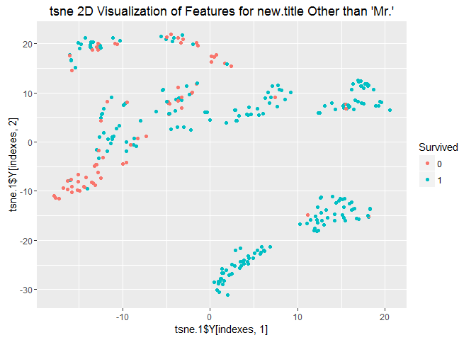
# To get a baseline, let's use conditional mutual information on the tsne X and
# Y features for females and boys in 1st and 2nd class. The intuition here is that
# the combination of these features should be higher than any individual feature
# we looked at above.
condinformation(most.correct$survived[indexes], discretize(tsne.1$Y[indexes,]))
## [1] 0.2579789
# As one more comparison, we can leverage conditional mutual information using
# the top two features used in our tree plot - new.title and pclass
condinformation(rf.label, data.combined[1:891, c("new.title", "pclass")])
## [1] 0.2506932
# OK, now let's take a look at adult males since our model has the biggest
# potential upside for improving (i.e., the tree predicts incorrectly for 86
# adult males). Let's visualize with tsne.
misters <- data.combined[data.combined$new.title == "Mr.",]
indexes <- which(misters$survived != "None")
tsne.2 <- Rtsne(misters[, features], check_duplicates = FALSE)
ggplot(NULL, aes(x = tsne.2$Y[indexes, 1], y = tsne.2$Y[indexes, 2],
color = misters$survived[indexes])) +
geom_point() +
labs(color = "Survived") +
ggtitle("tsne 2D Visualization of Features for new.title of 'Mr.'")

# Now conditional mutual information for tsne features for adult males
condinformation(misters$survived[indexes], discretize(tsne.2$Y[indexes,]))
## [1] 0.07556394
#
# Idea - How about creating tsne featues for all of the training data and
# using them in our model?
#
tsne.3 <- Rtsne(data.combined[, features], check_duplicates = FALSE)
ggplot(NULL, aes(x = tsne.3$Y[1:891, 1], y = tsne.3$Y[1:891, 2],
color = data.combined$survived[1:891])) +
geom_point() +
labs(color = "Survived") +
ggtitle("tsne 2D Visualization of Features for all Training Data")

# Now conditional mutual information for tsne features for all training
condinformation(data.combined$survived[1:891], discretize(tsne.3$Y[1:891,]))
## [1] 0.2135174
# Add the tsne features to our data frame for use in model building
data.combined$tsne.x <- tsne.3$Y[,1]
data.combined$tsne.y <- tsne.3$Y[,2]